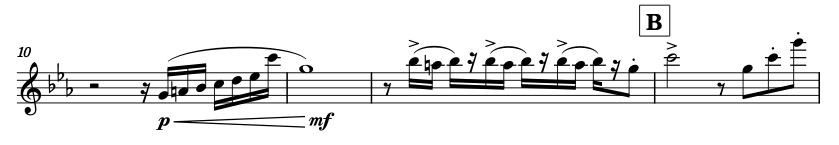
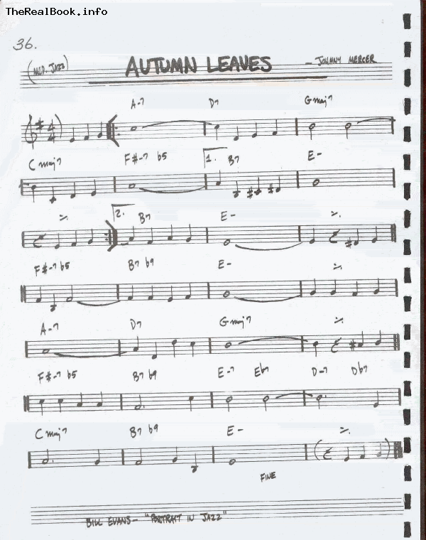
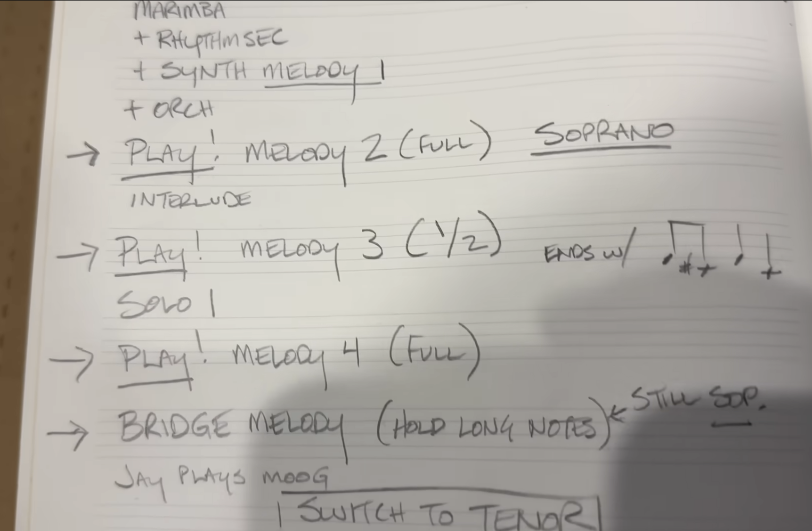

Two and a Half Types of Sheet Music
The main ways I think about sheet music
As a bandleader, to get the best out of your musicians, you need to provide them with the best sheet music you can. However, just what that means depends on context: there are several types of sheet music, appropriate in different contexts. I like to think that there are two and a half types of charts: fully specified sheet music, loosely specified charts, and reminders.
Fully Specified Sheet Music
First is fully specified sheet music, like they use in classical
music. This is the music I write when writing for the
Video Game Orchestra
, or when writing detailed
originals/arrangements
. Here, the sheet music should have all the necessary information for
performing the piece. This doesn't always mean all the notes and
rhythms: something like "4 on the floor" or "bossa nova" can actually
be a fully specified drum part depending on context, especially if it
makes references to specific recordings or traditions. The intention
though, is that this chart is self-sufficient for the band to realize
the author's musical intention, in the way that the sheet music for a
Bach fugue is self-sufficient to play that fugue

This kind of chart is super useful when operating with trained musicians in a specific tradition: a well made chart can lead to essentially pristine sightreadings. A great example of this is orchestras: you can hire a good orchestra, give them good sheet music, and the first reading could be the way you envisioned it (or very close). It saves a ton of rehearsal time, and hence money (when professional are involved), and leaves more time for the more fun parts of rehearsal: taking things from good to great. There are a couple caveats though:
- Making a good chart takes time and skill. Engraving is a full time job after all. Often this time investment is worth it (especially with large ensembles), but it is something to keep in mind. Using good engraving software will help tremendously with this (I got on the Dorico train when I had to write orchestral scores before Musescore had collision detection, but modern Musescore can make great parts nowadays), as will general engraving resources ( Elaine Gould's Behind Bars being the gold standard).
- The effectiveness of the charts depend on the musicians and their training. In my experience, classical musicians are excellent at following music exactly, jazz musicians tend to treat it as a suggestion at best, and there are incredible musicians who simply don't read music at all. Know your musicians when writing one.
A fully specified chart loses some of the opportunity for musicians to put in their own personal spin on the music (which I suspect is part of why jazz musicians often don't follow them very well). This might be:
- A benefit if you are looking for a specific musical intention to be realized
- A necessary evil when dealing with large ensembles, as there isn't usually time to take in everybody's suggestions
- A problem if you're explicitly looking for musical input from your players
If you're in that last situation but still need fully written charts, I recommend working with the musician you're looking for musical input from, preferably ahead of time, to either get what you need and write it down, or let them prepare for this situation and leave it underspecified. If you're writing these kinds of charts, you're probably not looking to waste rehearsal time on non-ensemble things, and giving advance warning will help a ton with that.
Loosely Specified Charts
The quintessential example of this kind of chart is lead sheets, as found in the Real Book . Lead Sheets are basic sheet music that contain chords, melody, and sometimes general form indication. This is what give to people when playing a straight-ahead jazz gig. They are the bread and butter of a lot of jazz. The lead sheet is not a fully written chart: it does not fully specify your part. This is made obvious by the fact that everybody reads from the same sheet, but plays different things. What it gives you is a set of constraints that your part must fit in (the chords, the form, etc...). How strict these constraints are depends on style, and the skill/preference of the musicians: jazz musicians famously like to play "out", which loosely means breaking free of the harmonic constraints of the tune. The job of the musician reading a lead sheet is to come up with a part that fits these constraints. Often, this is done on the fly, improvising a solo, walking a bassline, or comping.
Consequently, a certain amount of knowledge is assumed (and required) to use a lead sheet. Most obvious is general style-specific language: if you're a bassist reading a jazz lead sheet, you need to be ale to walk a bassline . This extends to sub-genres and adjacent genres: you gotta know how to play on a bossa, up tempo swing, etc... Jazz musicians spend a lot of time practicing these language elements, and it's how they can play seemingly any tune based on just a leadsheet.
But also (and this is often a weak point of amateur jazz musicians), song-specific knowledge is extremely useful to make not just decent but actually enjoyable music. For example, the intro to Canonball Adderley's version of Autumn Leaves is almost never notated in Autumn Leaves lead sheets , but if this tune is called, you're probably expected to be able to pick up on the pattern if the bassist opens with it. That's also part of the general jazz knowledge expected to play a lead sheet well. Jazz is arguably quite special because of its standardized repertoire of standards (i.e. commonly played songs), jazz heroes and classic recordings that you will get vibed (read: made fun of) at jam sessions for not knowing, but really you see this in other genres. As a rock guitarist, you probably should have an idea of what Jimi Hendrix or Prince sound like, as you might be asked to play parts that sound like that. Sheet music for musicals will have text like "wailing Prince guitar solo" written in the score!

The chart is mostly here a set of shared constraints that the band agrees on. We can say that Bach wrote a fugue by writing down the notes on sheet music, but I think a leadsheet alone is not a piece of music. Rather, it is a way to guide a group towards making a piece of music, and how the music will sound will depend heavily on the band. If this sounds like the core ethos of jazz to you, you might be on to something.
Reminders
This leads me to the third type of chart: basically a personalized reminder. This chart is not meant to contain the musical information about the piece. You would get that elsewhere, from a recording, a demo, a confused explanation from an experimental composer, whatever. This chart is here to let you remember that you play this tune in F when the substitute singer is here, that there's an extra bar after the bridge, and that the hit at the end of the second verse is on the and of 3. You've already learned the part, but in this marathon 45 song setlist, you sometimes forget that the hit at the end of the second verse is on the and of 3. Without these notes, you might have forgotten, but now you have a failsafe. This is what I use when playing dozens and dozens of covers in a night, like with Traffics D'airs.
This kind of chart is heavily under-specified by design: it should
have only the info you need, but be highly parseable. Ideally, you
spend most of the night NOT looking at the chart, but when you need
it, you can immediately tell where you are. For this reason, I like to
handwrite these, using colors, circling important words, etc... I am
of the opinion that should strive to play your music by heart
- Consensus mechanism on form nomenclature, for rehearsal efficiency: such a chart that clearly labels musical sections can be helpful in rehearsal (let's take it from letter B), especially if the form is more complex than verse/chorus/bridge style stuff.
- Note-taking platform for modifications to a tune that is otherwise close to the original. Say you're playing a cover, but you play the last chorus twice, then add a sax solo over the verse, do a stop time with syncopated hits, then vamp the outro. If everyone already knows the original, making a full chart is a waste of time, and playing "spot the difference" in a fully written chart can be tougher than just having the changes above written out as text.
Sometimes this is just put into the setlist as text, and if you can get away with that, it's pretty ideal. Next time you go to a concert, even if the band is playing from memory, chances are there's a piece of paper taped to the floor behind their monitor with the setlist and possibly a few notes of this kind. Even if you're playing the whole set from memory, I'd always encourage you to have something you can take notes on for every tune, so that any modification doesn't get lost (there will always be comments or modifications on tunes). It'll save time when someone goes "oh how did we end this tune last time" and you can just pull up your notes.
Crucially, this kind of chart only works if you do not need to specify the details of the music to people. In practice that means: there is an audio recording or detailed demo of the piece that musicians can learn from, and, crucially you can trust the musicians to learn the music from that recording. This is not only a skill issue (as in: can they learn the music by ear), but also a commitment issue (are they actually going to learn the song before rehearsal). You have to communicate this clearly though: the chart is not the sheet music, they have to learn that on their own, this is just the reminder. Be explicit, because you can't always trust what the chart looks like: a lead sheet is effectively just a reminder of this kind if you're expecting the band to play specific parts!

Recap
So, which kind of sheet music should you write? Here are a few common scenarios:
- If you are writing for classical musicians, or for any kind of large ensemble, you need fully written, as specific as possible sheet music. Every question a musician asks about your song is a failure you should remember and address in your next version/chart. Every typo/error in the chart makes every little unusual thing look suspicious, which will prompt them to not trust it and ask you about it. This means you should make sure you charts are good enough that they can be trusted. This takes time and skill, it is an entire job! But if you are serious about getting the best out of a large ensemble, especially on limited time, there's no shortcut for this.
- If you're writing for a class or casual ensemble where people are gonna show up, sightread/play it a few times, and then move on: give them as much info as they can comfortably handle while sightreading. That might mean not writing out a full part if they suck at sightreading and are not gonna take the time to learn it, or it might mean writing out a full part even for a jazz gig, if they are good at sightreading but aren't familiar with that style's language (sometimes all you got is a classical bassist and you gotta write a walking part). This does require knowing you musicians (and you can just ask them what works best for them). I'm gonna be honest: this situation usually is an art of cutting your loses. Fundamentally, if you're playing with people who don't care or aren't really up for the job, it's never gonna be peak, but you do have a lot more agency on the final result that you might suspect if you do things right.
- If you're in a cover band, or trying to learn a tune for yourself, or playing with people you trust to learn the part on their own: then you can use the reminder style chart. Just be explicit about what it is (a consensus and note taking tool) and isn't (a way to learn the tunes), and provide an actual way to learn the tunes ( PLEASE give me a reference recording and not just a song name, I've learned the wrong song or wrong version too many times).
That said, it still depends! Know your musicians, and give them a
chart that will be useful for them, as a fully written out chart for a
guitarist that only reads tabs will just be a waste of time